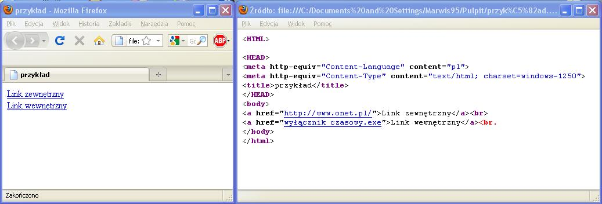

Link zewnêtrzny otwiera stronê internetow¹ która nie jest na dysku.
Wygl¹da tak:
(a href="ares_strony")Nazwa która siê wyœwietla na stronie-mo¿e to byæ zdjêcie(/a)
W tym wypadku:
(a href="http://www.onet.pl/")Link zewnêtrzny(/a)
Ka¿de (a href="....") musi mieæ swoje zamkniêcie (/a)